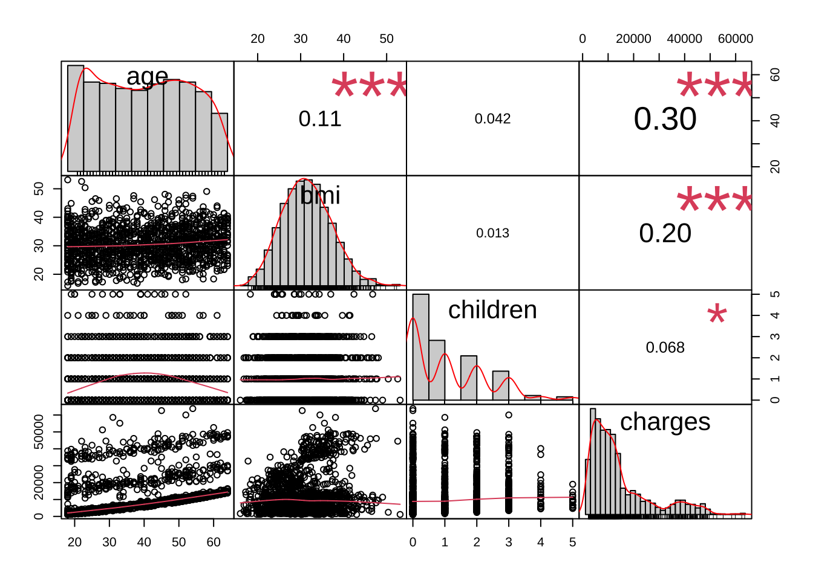
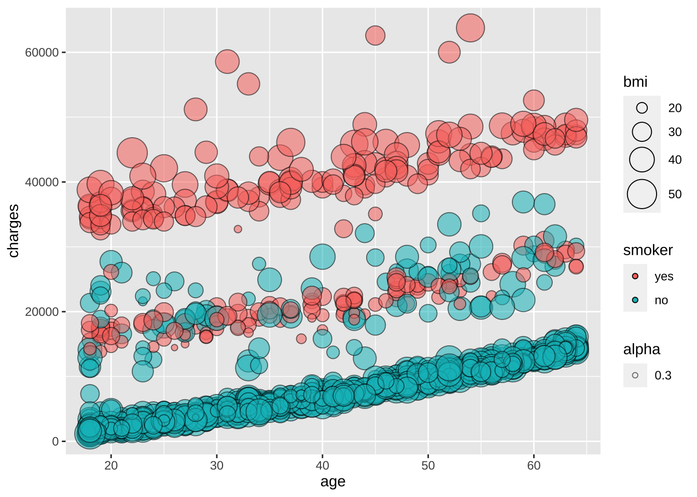

library(dlookr)
library(corrplot)
library("PerformanceAnalytics")
library(splitTools)
library(ranger)
library(tidyverse)
library(caret)ML2 project
Load libraries
Load data
df.insurance <- read.csv(file ='./datasets/insurance.csv', header = TRUE)
describe(df.insurance)# A tibble: 4 × 26
described_variables n na mean sd se_mean IQR skewness kurtosis
<chr> <int> <int> <dbl> <dbl> <dbl> <dbl> <dbl> <dbl>
1 age 1338 0 3.92e1 1.40e1 3.84e-1 2.4 e1 0.0557 -1.25
2 bmi 1338 0 3.07e1 6.10e0 1.67e-1 8.40e0 0.284 -0.0507
3 children 1338 0 1.09e0 1.21e0 3.30e-2 2 e0 0.938 0.202
4 charges 1338 0 1.33e4 1.21e4 3.31e+2 1.19e4 1.52 1.61
# … with 17 more variables: p00 <dbl>, p01 <dbl>, p05 <dbl>, p10 <dbl>,
# p20 <dbl>, p25 <dbl>, p30 <dbl>, p40 <dbl>, p50 <dbl>, p60 <dbl>,
# p70 <dbl>, p75 <dbl>, p80 <dbl>, p90 <dbl>, p95 <dbl>, p99 <dbl>,
# p100 <dbl>Reorganize data
num.cols <- unlist(lapply(data, is.numeric))
num.cols <- c('age', 'bmi', 'children', 'charges')
cat.cols <- c('sex', 'smoker', 'region')
df.insurance <- df.insurance %>%
mutate(sex = factor(sex, levels = unique(df.insurance$sex))) %>%
mutate(smoker = factor(smoker, levels = unique(df.insurance$smoker))) %>%
mutate(region = factor(region, levels = unique(df.insurance$region)))Plots correlation netween numerical features
chart.Correlation(df.insurance[num.cols], histogram = TRUE, pch = 19)
Plots correlation netween numerical features
ggplot(df.insurance, aes(x = age, y = charges, fill = smoker, size = bmi, alpha = .3)) +
geom_point(pch = 21) +
scale_size_continuous(range = c(0, 10))
#eda_report(df.insurance, charges, output_format = "html", output_file = "EDA_insurance.html")Split dataset into 60% train set, 20% validation and 20% test set
set.seed(1)
inds <- partition(df.insurance$charges, p = c(train = 0.6, valid = 0.2, test = 0.2))
str(inds)List of 3
$ train: int [1:804] 2 3 7 8 9 11 12 15 16 18 ...
$ valid: int [1:266] 5 17 19 31 36 41 46 47 49 51 ...
$ test : int [1:268] 1 4 6 10 13 14 20 22 24 26 ...#$ train: int [1:804] 2 3 7 8 9 11 12 15 16 18 ...
#$ valid: int [1:266] 5 17 19 31 36 41 46 47 49 51 ...
#$ test : int [1:268] 1 4 6 10 13 14 20 22 24 26 ...
train <- df.insurance[inds$train, ]
valid <- df.insurance[inds$valid, ]
test <- df.insurance[inds$test, ]Create simple linear model with ‘charges’ as outcome variable and inclusing all other columns as predictor variables.
lm1 <- lm(charges ~ ., train)
summary(lm1)
Call:
lm(formula = charges ~ ., data = train)
Residuals:
Min 1Q Median 3Q Max
-12068 -3004 -1133 1415 29399
Coefficients:
Estimate Std. Error t value Pr(>|t|)
(Intercept) 11065.71 1435.52 7.709 3.8e-14 ***
age 267.31 16.05 16.659 < 2e-16 ***
sexmale -643.65 447.56 -1.438 0.1508
bmi 342.64 38.72 8.850 < 2e-16 ***
children 416.10 187.07 2.224 0.0264 *
smokerno -24336.90 562.65 -43.254 < 2e-16 ***
regionsoutheast 340.18 629.25 0.541 0.5889
regionnorthwest 846.08 639.17 1.324 0.1860
regionnortheast 1486.04 642.39 2.313 0.0210 *
---
Signif. codes: 0 '***' 0.001 '**' 0.01 '*' 0.05 '.' 0.1 ' ' 1
Residual standard error: 6265 on 795 degrees of freedom
Multiple R-squared: 0.7408, Adjusted R-squared: 0.7382
F-statistic: 284 on 8 and 795 DF, p-value: < 2.2e-16Predict the outcome of the validation set and calculate RMSE and R2 scores.
lm1.pred <- predict(lm1, valid, se.fit = TRUE)
RMSE(lm1.pred$fit, valid$charges) # [1] 5914.46[1] 5914.46R2(lm1.pred$fit, valid$charges) # [1] 0.7619868[1] 0.7619868Predict the outcome of the test set and calculate RMSE and R2 scores.
lm1.pred <- predict(lm1, test, se.fit = TRUE)
RMSE(lm1.pred$fit, test$charges)[1] 5670.218# [1] 5670.218
R2(lm1.pred$fit, test$charges)[1] 0.773166# 0.773166